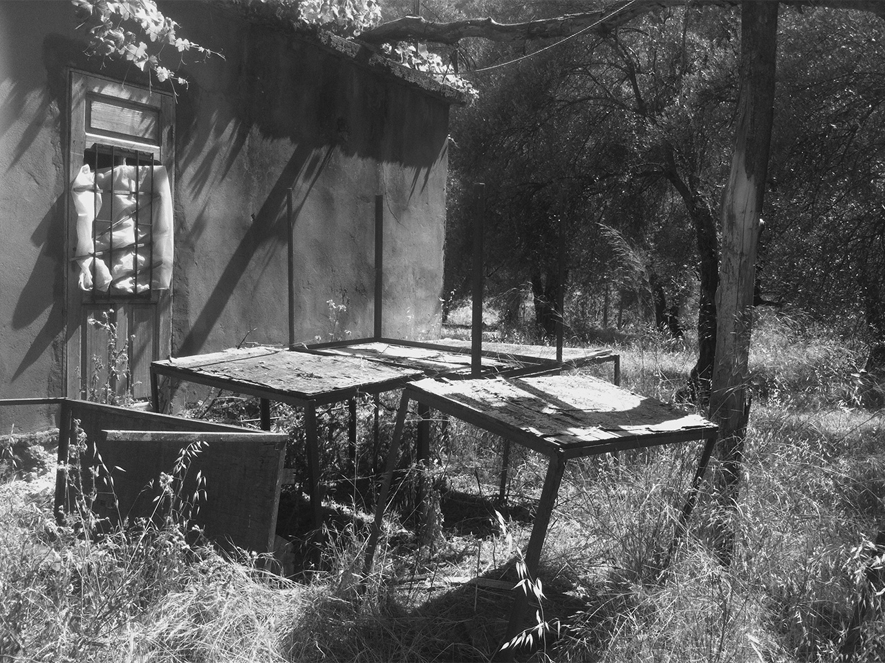

Lorsque j’étais enfant, mon frère et ma sœur me faisaient peur avec le conte de Saada, une sorcière qui vivait dans l'ombre d'une cabane abandonnée à Bsharri. Bien que je ne l’ai jamais aperçue, sa maison au fond de la vallée de la Qadisha, était à proximité de celle de mon grand-père. Nous appelions cette maison Beit Saada.
Dans cette œuvre, j'ai pris une photo de l'arrière-cour de Beit Saada avec un iPhone 4, puis je l'ai recolorée numériquement, m’inspirant des techniques de coloration à la main utilisées par de nombreux photographes du XXe siècle pour donner de la couleur à leurs tirages en noir et blanc.
Vue du collage.
Vue de la photographie d'origine en noir et blanc.